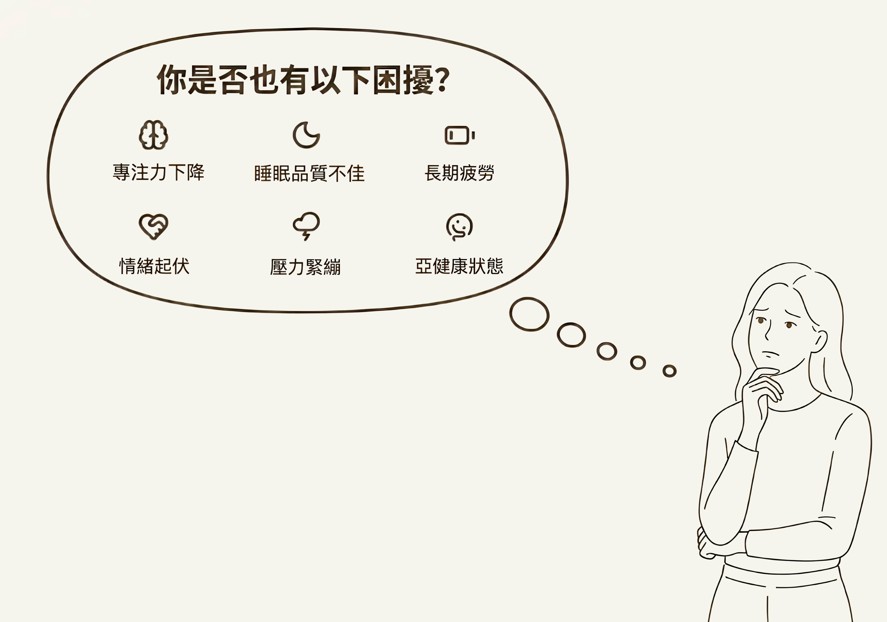
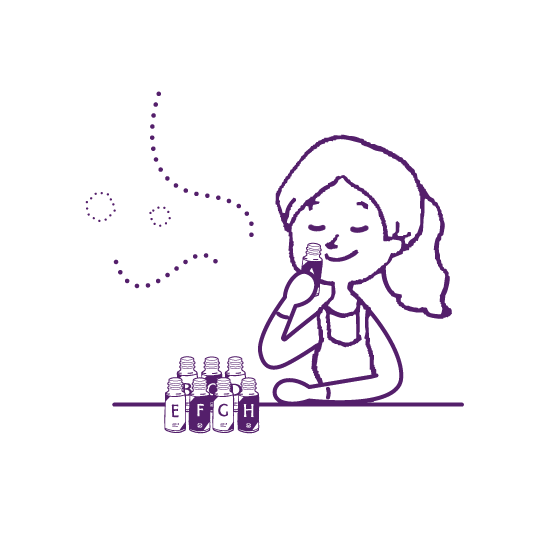
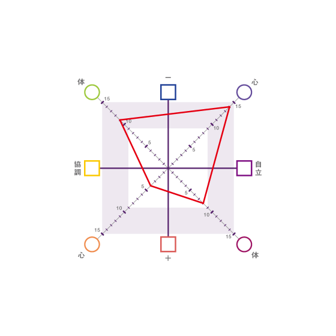
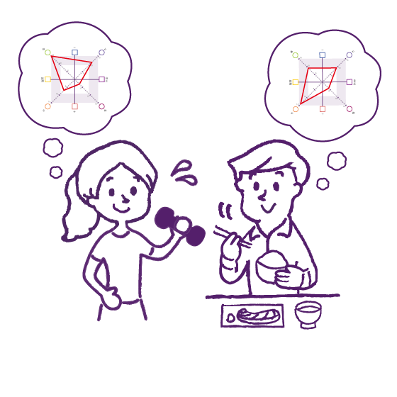

如果你也有這些困擾 可能與你的身心平衡有關
透過嗅覺反應 能更清楚看見當下的狀態
源自AHIS日本專業研究與臨床應用，由 AROMAFONDA 引進台灣。


透過嗅覺反應 能更清楚看見當下的狀態
源自AHIS日本專業研究與臨床應用，由 AROMAFONDA 引進台灣。
– point of olfactory –

只需聞八種氣味，即可初步了解目前的身心平衡狀態。透過直覺性的香氣選擇，獲得較不易受主觀意識影響的身體訊號。

分析結果會整理為【IM 檢測圖表】，幫助你更清楚看見自己的體質傾向。也能進一步比較不同調整方式，是否真正適合當下的自己。

了解自己的狀態後，可將適合的精油、飲食與生活習慣更自然地融入日常。也有助於理解自己與他人的互動模式。
- IM check & IM chart -
嗅覺反應分析是建立在一套理論基礎之上。
其核心包含以圖像呈現特質狀態的「IM 檢測」，以及用來延伸判讀與建議的「IM 圖表」。

透過聞八種氣味，並依照直覺喜好排序，將結果轉換成數值後製成圖表，這就是「IM 檢測」。
嗅覺與大腦邊緣系統密切相關，因此這張圖也可視為當下身心狀態的一種整理與呈現。
透過「IM 檢測」，可以更了解自己目前的平衡狀態，並進一步看見哪些因素有助於穩定身心，哪些因素可能使平衡更容易被打亂。

「IM 圖表」會結合飲食、香氣、生活習慣與其他不同面向的分類，並根據「IM 檢測」的結果進一步分析，
幫助你理解現階段更適合自己的選擇方向，作為日常調整與照顧身心的參考。
- demo -
來自日本專業機構
AHIS（健康包括支援協會）為日本創立「嗅覺反應分析」理論與系統的專業機構。
透過氣味偏好分析身心狀態，並發展出 IM 檢測與 IM 圖表，幫助更清楚看見當下的平衡。
AHIS 同時建立培訓與認證制度，培養嗅覺反應分析師與講師，
並以系統化的學習架構，將此方法應用於芳療、健康管理與日常生活調整等領域。
AromaFonda 與 AHIS 合作，將嗅覺反應分析系統引進台灣，讓更多人能透過氣味了解自身狀態。


Try it now!